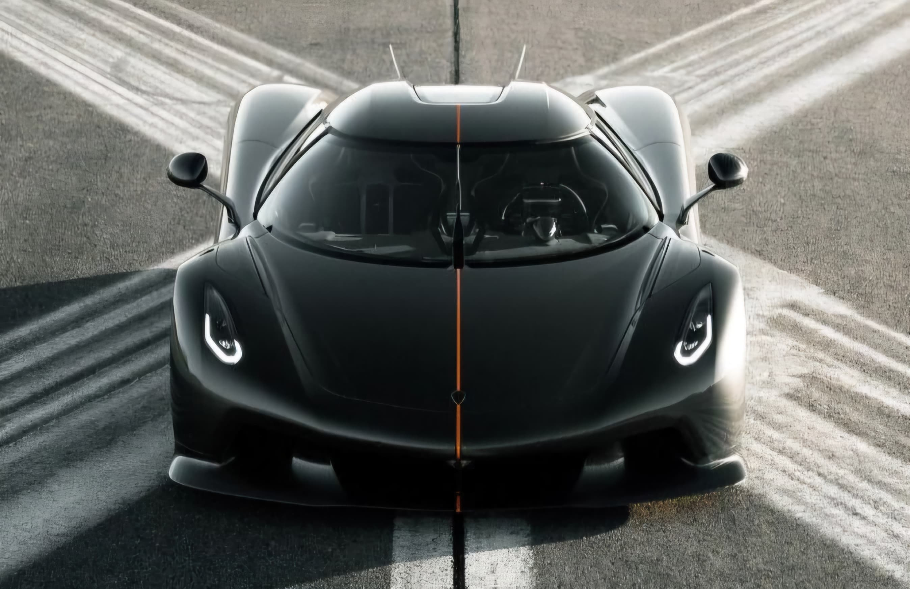

Performance

For the content to be opened in a new tab click performance.
At the heart of the Jesko Absolut is a 5.0-liter twin-turbocharged V8 engine
capable of producing a staggering 1,600 horsepower when running on E85 biofuel.
The car’s lightweight carbon fiber structure and advanced aerodynamics
allow it to achieve speeds projected to exceed 500 km/h (310 mph).
- Engine: 5.0L twin-turbo V8
- Horsepower: 1,600 hp on E85 (1,280 hp on standard fuel)
- Torque: 1,500 Nm (1,106 lb-ft)
- Top Speed: Projected over 500 km/h (310 mph)
- Transmission: 9-speed Light Speed Transmission (LST)
Specifications
For the content to be opened in a new tab click Specifications.
Below are some key specifications that highlight the engineering prowess of the Koenigsegg Jesko Absolut:
- Engine Type: 5.0L twin-turbo V8
- Fuel Type: E85 Biofuel (alternative: standard gasoline)
- Power Output: 1,600 hp (E85), 1,280 hp (gasoline)
- Transmission: 9-speed Light Speed Transmission (LST)
- Torque: 1,500 Nm (1,106 lb-ft)
- Top Speed: Projected 500+ km/h (310 mph)
- Weight: 1,320 kg (2,910 lbs)
- Drag Coefficient: 0.278 Cd
Design
For the content to be opened in a new tab click Design
The design of the Jesko Absolut is a masterclass in aerodynamic efficiency. Its long tail, smooth underbody
and lack of large wings result in a drag coefficient of just 0.278 Cd
one of the lowest among hypercars. The car’s sleek profile and sharp lines minimize air resistance
while maintaining downforce at high speeds.
- Length: 4,610 mm (181.5 in)
- Width: 2,030 mm (79.9 in)
- Height: 1,210 mm (47.6 in)
- Weight: 1,320 kg (2,910 lbs)
- Drag Coefficient: 0.278 Cd
Gallery
per vedere più immagini click qui.